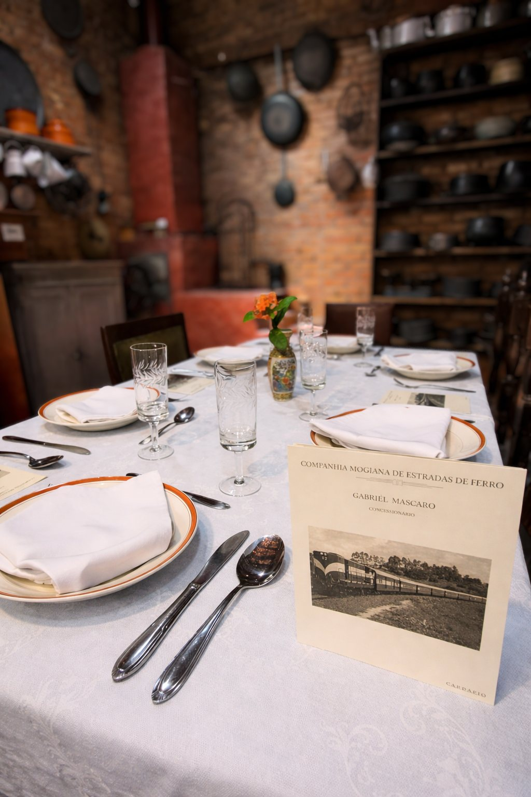
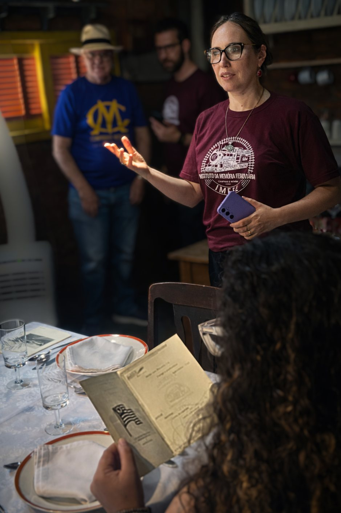
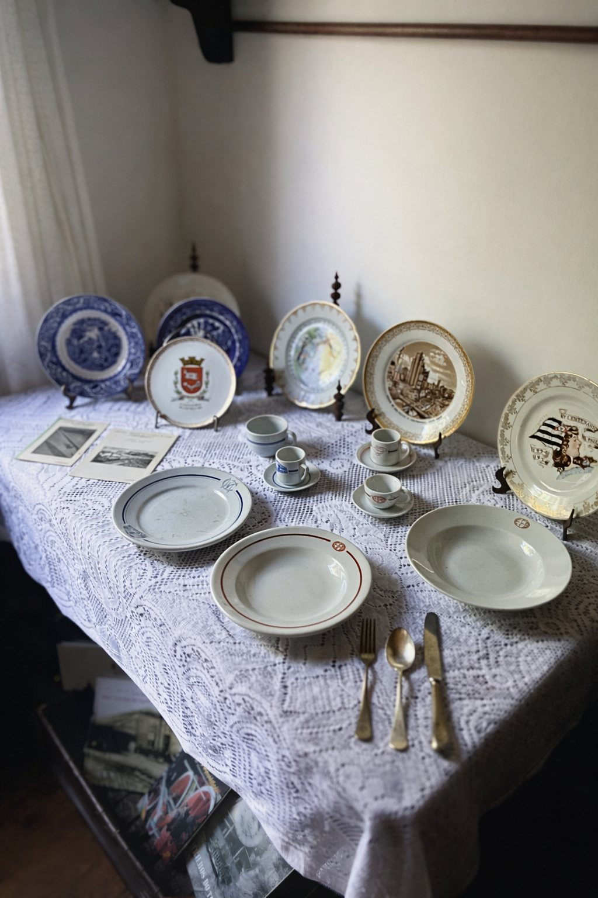
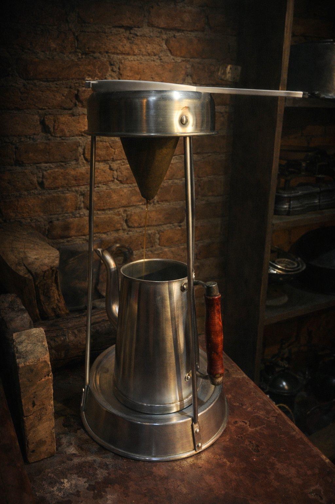
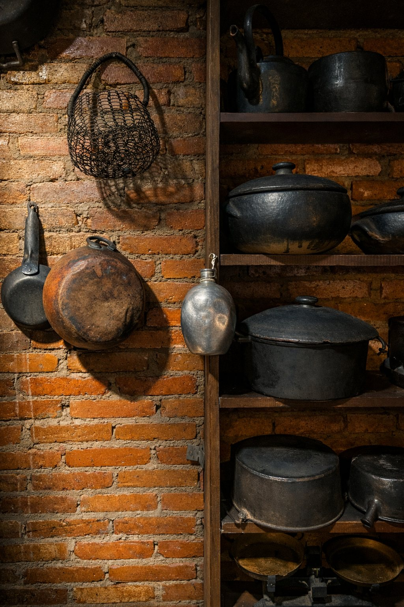
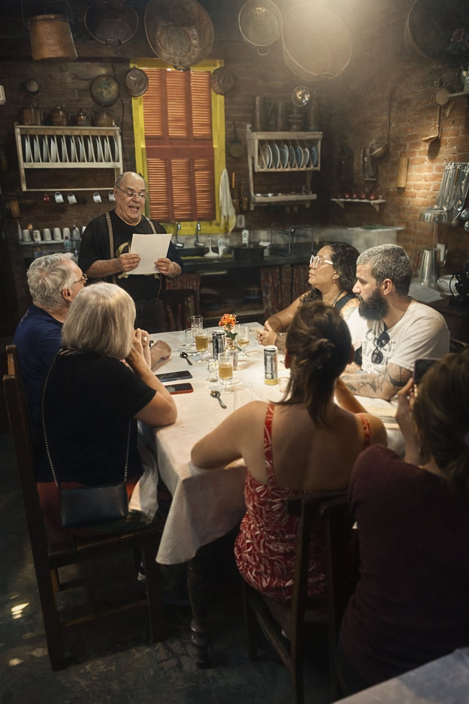
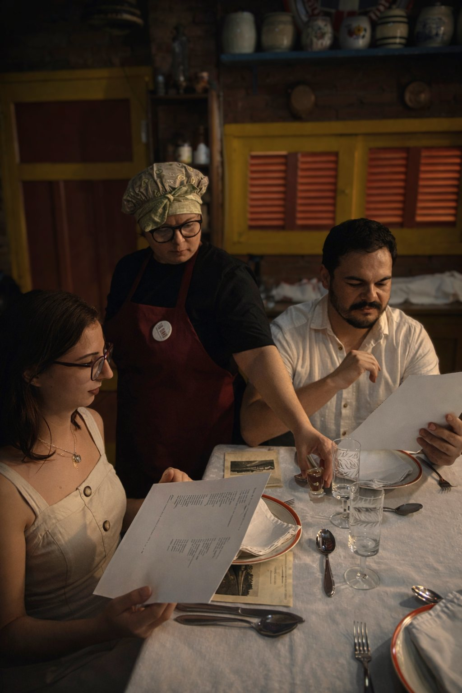

Uma Casa-Museu
Uma visita conduzida ao acervo da Casa-Museu José Augusto Saponari, descobrindo objetos, documentos e histórias ligados à ferrovia e à transformação de Campinas.
Pelo acervo, pela palavra e pelo sabor.
Há histórias que sobrevivem nos documentos, nos objetos e nas lembranças. Outras sobrevivem também à mesa.
Trilhos & Temperos é uma experiência histórico-gastronômica para apenas 10 participantes, criada pelo Instituto da Memória Ferroviária — IMEFE + Paulistânia Desvairada.
Durante uma tarde, percorremos diferentes maneiras de entrar em contato com o passado: primeiro, visitando um acervo dedicado à memória ferroviária; depois, sentando-nos à mesa para experimentar pratos inspirados em cardápios históricos; e, por fim, deixando que literatura, conversa e comida façam essas histórias circularem novamente.

Uma visita conduzida ao acervo da Casa-Museu José Augusto Saponari, descobrindo objetos, documentos e histórias ligados à ferrovia e à transformação de Campinas.
Um menu construído a partir de pesquisas sobre antigos cardápios e práticas alimentares, transformando documentos do passado em uma experiência à mesa.
Nesta edição, o almoço traz o clássico Filé à Arcesp, prato que nos permite conhecer uma parte dessa história também pelo sabor.
Durante o almoço, um sarau aproxima textos literários, memória ferroviária e gastronomia. A palavra participa da refeição.
Uma experiência deliberadamente pequena, feita para permitir proximidade com o acervo, conversa e uma mesa compartilhada.
O Trilhos & Temperos transforma pesquisa histórica em experiência.
A visita ao acervo, os documentos, os objetos, a literatura e o almoço constroem juntos uma maneira sensorial de se aproximar do passado.
Um objeto revela como se viajava. Um documento mostra o que se servia. Uma louça guarda hábitos de outra época. Um texto literário devolve vida a um imaginário. E uma receita transforma tudo isso em sabor.
A comida aqui é uma das maneiras de contar a história.




A experiência começa às 12h, com uma visita ao acervo da Casa-Museu José Augusto Saponari.
Ali, objetos, documentos e histórias conduzem o grupo pela presença da ferrovia na vida cotidiana e pelas transformações de Campinas e da região.
Às 13h, sentamos à mesa.
O almoço dá continuidade ao percurso iniciado no acervo. Pratos inspirados em pesquisas e cardápios históricos recuperam sabores, referências e modos de comer ligados a esse universo.
Mais do que reconstruir uma receita, cada prato cria uma aproximação sensorial com o passado.

Conhecemos a história por fotografias, documentos, objetos, relatos e livros. No Trilhos & Temperos, o paladar se soma a essas formas de conhecimento.


O Trilhos & Temperos recebe somente 10 participantes por edição.
O grupo pequeno é parte da experiência: permite observar o acervo de perto, ouvir as histórias, fazer perguntas, conversar e depois compartilhar uma mesma mesa.
Por isso, cada edição acaba tendo também algo de encontro — entre pessoas, histórias e sabores.

Ao redor da mesa, documentos, objetos, pratos e literatura começam a conversar entre si.
Uma ferrovia, um cardápio antigo ou uma Campinas de outros tempos deixam de ser apenas referências distantes e ganham corpo, cheiro, textura e sabor.
27 de setembro de 2026
12h — visita ao acervo
13h — almoço
Jardim Eulina · Campinas
Realização: Instituto da Memória Ferroviária — IMEFE + Paulistânia Desvairada.
por pessoa · apenas 10 lugares
Comprar bilhete — R$ 160Este botão já marca o ponto de conversão da página e depois receberá o link real de pagamento.
Cada edição recebe somente 10 participantes.
A visita ao acervo começa às 12h. O almoço está previsto para as 13h.
Não. A experiência foi pensada para receber tanto pessoas que já se interessam pelo tema quanto quem está conhecendo esse universo pela primeira vez.
Sim. O almoço histórico é uma das etapas centrais do Trilhos & Temperos e dá continuidade ao percurso iniciado no acervo.
No Jardim Eulina, em Campinas, com início na Casa-Museu José Augusto Saponari.